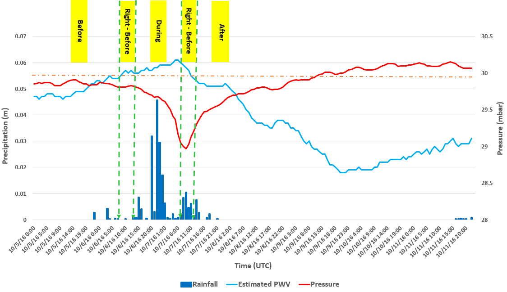
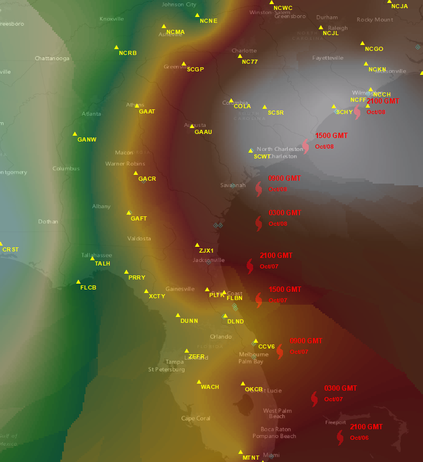
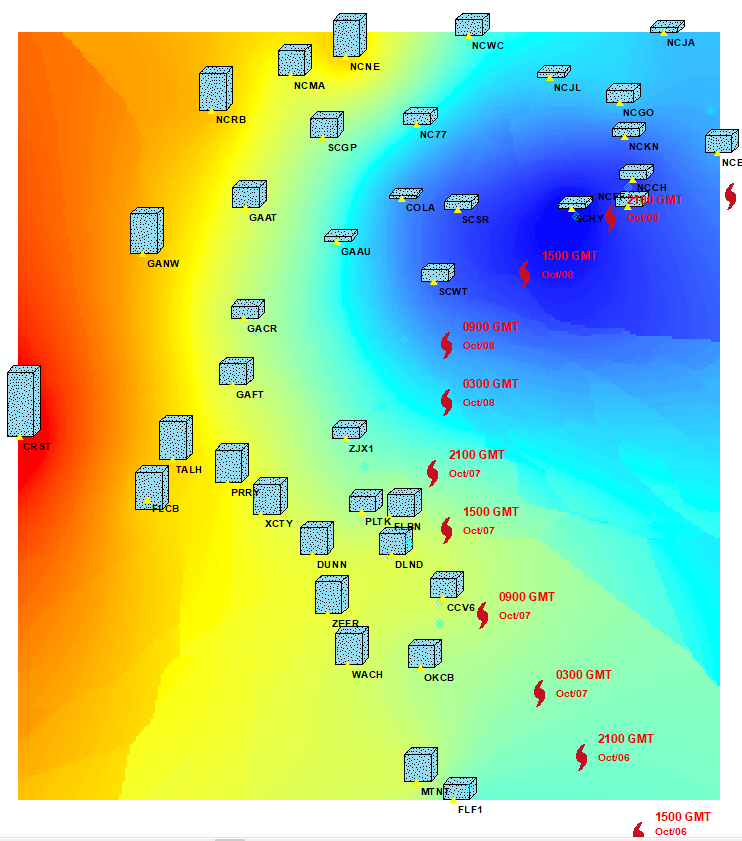
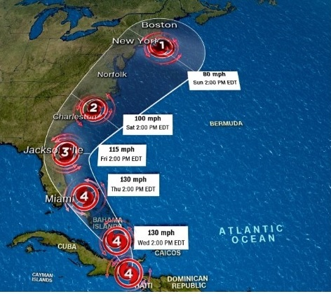

GPS Meteorology
This story map illustrates the GPS meteorology for monitoring of Hurricane Matthew 2016.

Created by Hoda Tahami From Oregon State University,2018
GPS meteorology
The accurate prediction of the path and intensity of a hurricane is crucial for planning the evacuation of the populated areas and for assessing its impact. Since the evolution of severe weather phenomena is associated with notable transient changes in water contents in the low atmosphere, the accurate monitoring of atmosphere water vapor or perceptible water vapor (PWV) spatial-temporal variations is critical to forecast and localize severe storms. On the other hand, the dynamic perturbations in the atmosphere water content can be measured from the tropospheric delay of GNSS signal propagated from a satellite to a receiver on the ground. By observing PWV spatial-temporal variations during a hurricane event, the nature of PWV of this type of event can be characterized.
This project will use data to produce a geovisualization, predicting hurricane path in US east coast states (Florida, Georgia, North and South Carolina). The path forecasting is based on the 24 hour GNSS observations of stations located at east coast area. As a case study, we adopted one of the most recent destructive and long-lived hurricane along the Florida, Georgia, and South-Carolina coast, namely, Hurricane Matthew, occurred in October 2016. To investigate the potential of GNSS data for retrieving the perturbation of GNSS derived PWV, seven days (5 October-11 October) observations of Continuously Operating Reference Stations (CORS) were used to track the hurricane trace .
The geovisualization will incorporate interactive elements, allowing the user to observe the fluctuation of atmospheric parameters over time (seven days) and the predicted path of maximum rainfall in every one hour prediction period. With forecasting the precipitation in each station, the path of maximum rainfall movement can be displayed over the time. This geovisualization seeks to use certain indicators to show where we can expect the maximum GNSS-derived precipitation as the atmospheric parameters (pressure, temperature, relative humidity) fluctuate.
GPS derived precipitaion vs ATM parameters
classification based on the hurricane occurrence time by connecting to the PWV observations time series and the defined threshold. The GNSS-derived PWV time series fluctuate below 0.055 during the “before” class (normal condition) where the precipitation associated to the hurricane does not happen. The estimated PWV keeps increasing to exceed the threshold where the “right before” class is defined. The “right before” class keeps for about one hour. The PWV series show an active, increasing pattern in the “during” class whereas the rainfall amounts reach its peak. Then PWV time series dramatically decrease to reach the threshold where the “right after” class is defined. It then fluctuates below the level of threshold while the “after” class is formed where rainfall is started to stop. It is evident that all precipitation events happen when the PWV is fluctuating above the 0.050 m.

How GIS helps in GPS meterology

Model's Discrepancy & Hurricane Path
By comparing different prediction time lags, the stations with minimum discrepancy are determined and clustered as a group. The characteristics of PWV in each cluster in time domain plays a role as a forecast indicator, which is extended to predict the path of the hurricane and its intensity as well..

Hurricane Path Prediction
The accurate prediction of the path and intensity of a hurricane is crucial for planning the evacuation of the populated areas and for assessing its impact. Since the evolution of severe weather phenomena is associated with notable transient changes in water contents in the low atmosphere, the accurate monitoring of atmosphere water vapor or perceptible water vapor (PWV) spatial-temporal variations is critical to forecast and localize severe storms. On the other hand, the dynamic perturbations in the atmosphere water content can be measured from the tropospheric delay of GNSS signal propagated from a satellite to a receiver on the ground. By observing PWV spatial-temporal variations during a hurricane event, the nature of PWV of this type of event can be characterized.

Watching for the next hurricane!!!
Download Storymap.js from https://github.com/HodaTahami/GPS_Meterology_Storymap
Created by Hoda Tahami From Oregon State University
{kind=link}